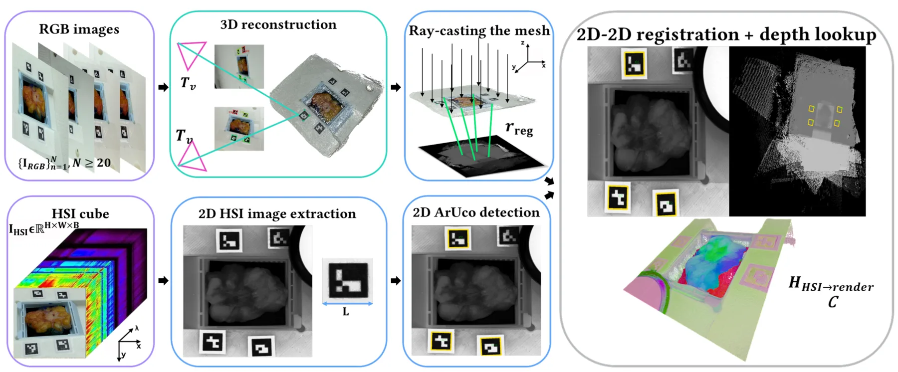
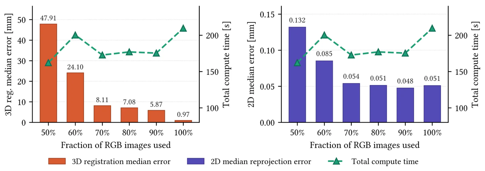
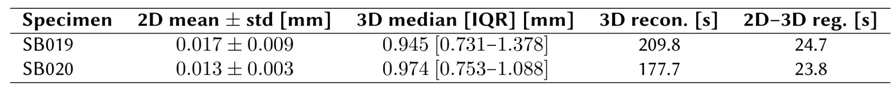

面向离体乳腺肿瘤标本三维高光谱映射的轻量级基准标记管线A Lightweight Fiducial-Based Pipeline for 3D Hyperspectral Mapping of ex-vivo Lumpectomy Specimens
SfM、bundle adjustment、fiducial 和跨模态 2D/3D 注册链路有工程参考价值；但场景偏医学小物体，和通用 SLAM/GNSS/大尺度重建的直接关联较弱。
一句话工作总结
该管线用 SfM、ArUco 约束 BA 和跨模态 homography，把 HSI 光谱图精确投到三维点云上，达到毫米级注册。
摘要
高光谱成像有望用于乳腺保乳手术中的切缘评估，但临床转化需要把二维光谱信息精确对齐到切除组织的三维形状上。本文提出一个全自动、无需标定的管线，用消费级 RGB 图像和一次顶视 HSI 采集生成离体标本的 3D hyperspectral point cloud。三维几何由深度学习 SfM backbone 重建，并通过自定义 bundle adjustment 利用放置在标本周围的四个 ArUco marker 角点一致性稳定到 metric reference frame。HSI cube 与重建配准时不恢复 HSI 相机位姿，而是利用两种模态均可见的 marker 建立 16 个角点对应并估计 planar homography，再通过正交渲染 depth map 查表恢复 3D 坐标。两个离体标本实验中，中位 3D 注册误差低于 1 mm，2D 重投影误差低于 0.02 mm，总处理时间小于 4 分钟。
Hyperspectral Imaging (HSI) is a promising modality for intraoperative assessment of resection margins in Breast-Conserving Surgery (BCS), but its clinical translation requires aligning the inherently 2D spectral information onto the 3D shape of the excised tissue so that suspicious regions can be precisely localized for targeted follow-up. We present a fully automated, calibration-free pipeline that produces a 3D hyperspectral point cloud of an ex-vivo lumpectomy specimen from a set of consumer-camera RGB images and a single top-down HSI acquisition. The 3D geometry is reconstructed with a deep-learning Structure-from-Motion backbone, stabilized in a metric reference frame by a custom bundle adjustment that enforces consistency on the corners of four ArUco markers placed around the specimen. The HSI cube is then registered to the reconstruction without recovering the HSI camera pose: the markers, visible in both modalities, define 16 corner correspondences that drive a planar homography, and 3D coordinates are recovered by lookup on an orthographically rendered depth map. Evaluated on two ex-vivo lumpectomy specimens, the pipeline achieves a median 3D registration error below 1~mm and a 2D reprojection error below 0.02 mm, with a total per-specimen processing time under 4 minutes on accelerated hardware. These results support the feasibility of integrating HSI-guided spatial localization into intraoperative margin assessment workflows for breast-conserving surgery.
中文解读摘录
- 链接：abs / PDF；类别：cs.CV；采集 score=10。
- 核心思路：用消费级 RGB 图像和单次顶视 HSI 采集，自动生成 ex-vivo 标本的 3D hyperspectral point cloud。
- 方法要点：用深度学习 SfM backbone 生成几何；通过四个 ArUco markers 的角点约束做自定义 bundle adjustment 稳定到 metric frame；HSI 与 RGB 重建之间不恢复 HSI 相机位姿，而是由 marker correspondences 驱动 planar homography，再从正交渲染 depth map 查表恢复 3D 坐标。
- 关注点：领域偏医学，但 fiducial + SfM + BA + 跨模态 2D/3D 注册链路对小场景高精度三维映射有参考价值；报告中位 3D registration error <1 mm、2D reprojection error <0.02 mm。
图表/页面预览
{kind=link}

{kind=link}

{kind=link}
